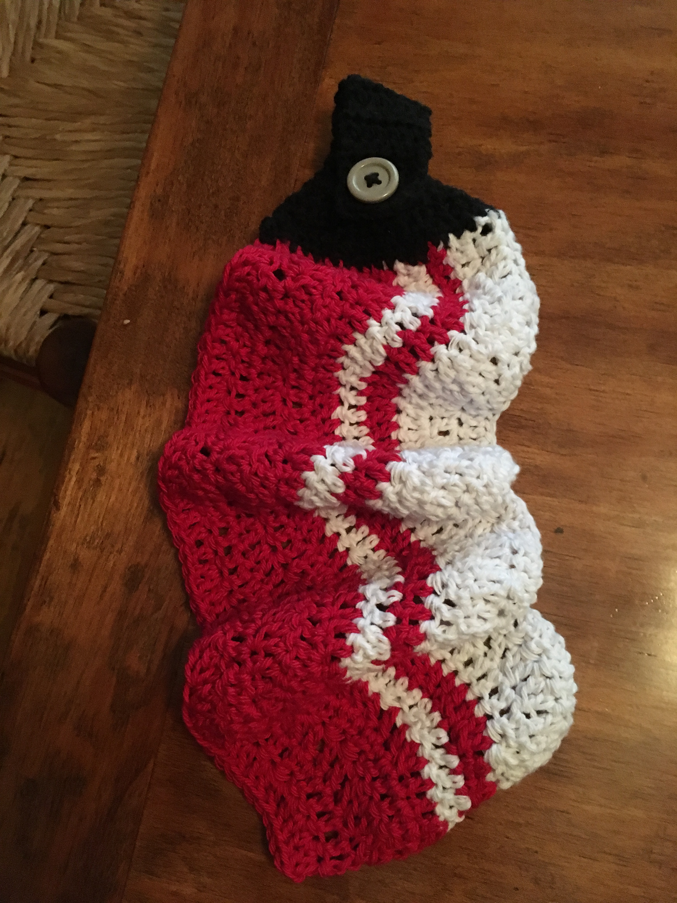

Tip 1: Personalize!
Who are you making this for? What books or movies or food do they like? Do they have any special biographical details that would make an item special to them, like Irish heritage, a year abroad in Korea, or a career in medicine? Do they have a sense of humor, a whimsical sense of style, or do they prefer more tradiational things?
Look online for free projects that fit your skill level (more or less) and the personality of the recipient. Just googling can turn up a lot of great patterns, especially if you search through images so you can immediately see what it looks like. Ravelry.com is also a great resource, though you may need to create an account to see what they have to offer.
See the table below for some examples of projects that might work for different personality types and interests.
|
Sci-Fi |
Horses |
Classic Rock |
Irish |
| Your Friend Who's About to Have Their First Kid |
Spock Baby Blanket |
Horse Rattle |
Yellow Submarine Booties |
Four-Leaf Clover Outfit |
| Your Elderly Grandmother |
Yoda Tea Cozy |
Horse Doily |
Stevie Nicks Throw Pillow |
Four-Leaf Clover Brooch |
| Your Edgy, Hard-Partying Cousin |
“Ood” from Doctor Who Ski Mask |
Mounted Horse Head Trophy |
Grateful Dead Vest |
 Irish Flag Koozie Irish Flag Koozie |
Tip 2: Get Creative!
Can't find a pattern that fits what you need (or you find one but aren't willing to pay the big bucks)? The secret is simple--adapt, adapt, adapt.
For example, say your brother-in-law is a chef who's all about bacon. Inspiration strikes--a bacon kitchen towel. Genius!
But that's pretty specific, and you can't find anything like it. You happen to run across this pattern for a bacon scarf. Maybe you would just make him this, but you know he's a fairly serious fellow who would probably never wear it.
So instead you scale down the pattern. It says to chain 283, but you just stop when it gets long enough (that pattern conveniently guides you to multiples of 14, but with a little thought you can pick whatever length you want). Crochet a black strip with a button hole, add a button, and voila, you've got a kitchen towel.
Changing colors is another obvious way to get what you need out of a pattern--for example, you can make a cat cup cozy into a fox cup cozy by just changing the colors and tweaking a few minor details.
You have to keep an eye open to the possibilities that lie in whatever pattern you happen to find.
Tip 3: Add Details and Customize Simple Patterns
Along those same lines, it's useful to think of small details to add to a basic pattern. Appliqués are usually pretty easy to make, and since they don't have to fit together or around a particular object, they're fairly forgiving. If you want to take the easy way out, clothing felt is easy to cut into appliqués.
Have a friend who loves beer and sunflowers? Just make a basic koozie pattern and throw on a couple of sunflower appliqués. Have an uncle that loves beer and the Cowboys? Use the same pattern, and instead of flowers, add a dark blue star and a football.
Tip 4: Learn With Every Project
Make it a point to complete projects that require different kinds of stitches and techniques. I know I said to find patterns you can customize for different people, but try to tackle a variety of projects.
Feel you've mastered single crochet, half-double crochet, and double crochet? Pick a project that involves Tunisian stitch. Or dabble in 3-D with a fun amigurumi pattern. Or learn corner-to-corner crochet by attempting a graphghan blanket.
The more skills you have in your arsenal, the easier it'll be to...
Tip 5: Go Off Book
Don't be afraid to forge your own path. If you can't find a pattern for something you want to make, don't let that limit you! You don't have to be an expert to make your own pattern. Just think about what shapes and different elements you want and try it out. You can always unravel your project and start over. If you don't know how to make a particular element, find a pattern that uses it within the larger project.
So if you want to make a stuffed ant, use an ice cream cone pattern and a ball pattern to make the body and make a second ball for the head. Then take inspiration from a crab pattern to make the pincers and a spider pattern to figure out the legs. You may have to adjust the sizes to fit together, but it'll help you understand the basic concepts behind making these shapes.
Or say you want to make a pineapple mug cozy, as I once did. The closest I could find was a pineapple teapot cozy. But the pattern helped me figure out that using a puff stitch in yellow would get the desired effect, and so I followed the instructions for that stitch and played around until I made something I liked.
I won't pretend that going your own way won't be more frustrating. It's much easier to follow a pattern exactly, to know exactly what to do next, but it's worth it for the flexibility to make anything you can imagine. You're not bound by what anyone else has done before, and therefore whatever you make is likely to end up much more personal.
If you want to be generous, you can also keep a record of what you're doing and make it into a pattern for the next person that wants to crochet pug mittens or a Power Rangers hand puppet or steak coasters. I never have the patience to do that, but I'd appreciate more fun patterns in the world!